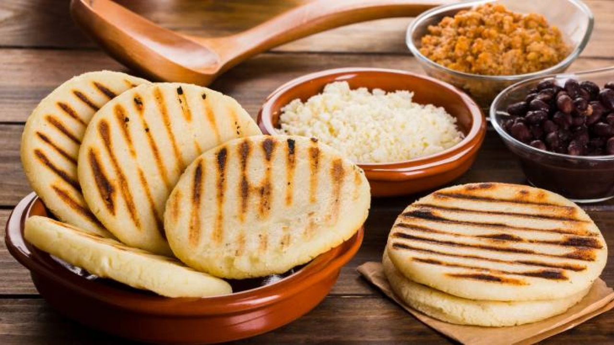

Arepas

Description
I was born in Venezuela and I remember eating arepas in my grandmother's house since I was very young. Later, I have lived in other countries and even though I haven't been to Venezuela in 10 years, every time I eat one I can't help but travel back home. Bonus: No matter the nationality, whoever I've suggested trying them loves them. You can't go wrong with these!
Ingredients
- 2 ½ cups lukewarm water
- 1 teaspoon salt
- 2 cups pre-cooked white cornmeal (such as P.A.N.®)
- ¼ cup vegetable oil, or as needed
Directions
- Stir water and salt together in a medium bowl; gradually stir in cornmeal with your fingers until the mixture forms a soft, moist, malleable dough.
- Form dough into eight 2-inch diameter balls; pat each ball to flatten into a 3/8-inch-thick arepa patty.
- Heat oil in a large skillet over medium heat; fry arepas in batches until golden brown, about 4 to 5 minutes per side. Transfer cooked arepas to a paper towel-lined plate to drain until cool enough to handle.
- Slice halfway through each arepa horizontally with a thin serrated knife to form a pita-like pocket.
- Enjoy!